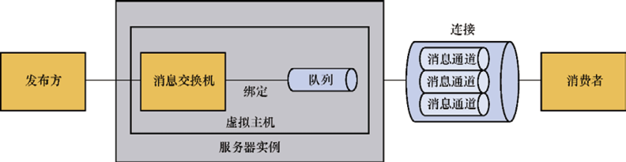
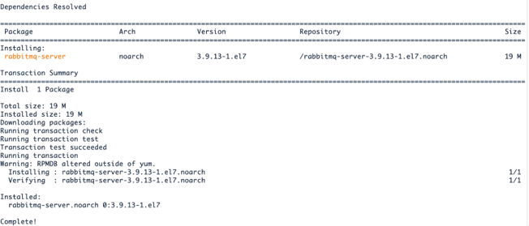
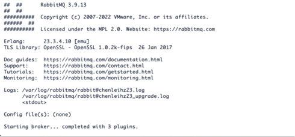
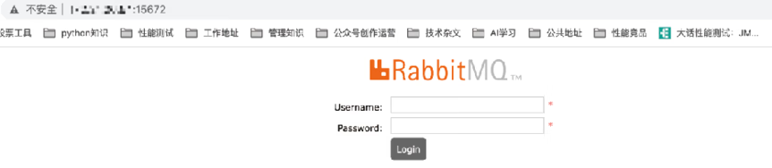
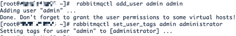
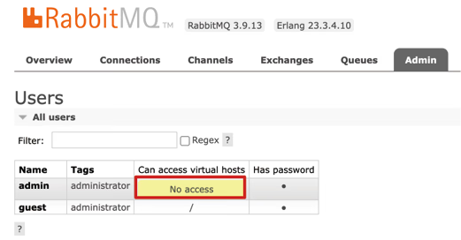
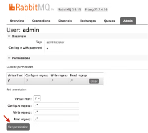
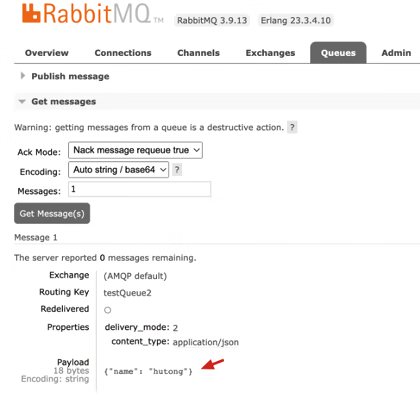
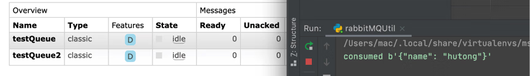

首页 > 编程笔记
RabbitMQ入门教程（非常详细）
RabbitMQ 是比较流行的消息中间件（消息队列），通常用于不同的独立程序之间或服务之间的通信。
RabbitMQ 是使用 Erlang 语言开发的开源消息队列系统，基于 AMQP（Advanced Message Queuing Protocol，高级消息队列协议）的主要特征是面向消息、队列、路由、可靠性和安全。
AMQP 更多用在企业系统内对数据的一致性、稳定性和可靠性要求很高的场景，对性能吞吐量的要求不高。
RabbitMQ 的典型应用场景如下：
具体步骤如下：
1) 安装必备的一些相关的依赖环境：
2) 下载安装 Erlang 的 rpm 安装包。因为 RabbitMQ 是基于 Erlang 语言开发的，所以需要先部署 Erlang 环境。
3) 下载安装 RabbitMQ-server 的 3.9.13 版本。此处注意要下载 el7 版本，和待部署环境的系统保持一致，即选择 RabbitMQ-server-3.9.13-1.el7.noarch.rpm。
另外，使用命令
安装命令如下：
我们可以通过以下命令启动 RabbitMQ 服务：
在默认情况下 RabbitMQ 的 Web 界面是关闭的，我们需要通过 RabbitMQ-plugins 来启用，以方便后续的使用：
在登录前，我们需要通过 RabbitMQctl 命令创建用户，如图5所示。
创建成功后，即可使用该用户登录 RabbitMQ 的 Web 界面。
在部署后使用过程中我们可能遇到如下错误：
产生这一问题的原因是没有设置 access virtual hosts，如图6所示。
我们需要通过图7中的 Set permission 设置 access virtual hosts。
关于权限管理，MySQL 有数据库的概念并且可以指定用户操作库和表等的权限，RabbitMQ 也有类似的权限管理。
在 RabbitMQ 中，我们可以使用虚拟消息服务器 Virtual Host，每个 Virtual Host 相当于一个相对独立的 RabbitMQ 服务器，每个 Virtual Host 之间是相互隔离的，消息交换机、队列和消息不能互通。
Virtual Host 的使用场景是多租户的场景，例如在主机资源紧缺的情况下，开发和测试共用一个 RabbitMQ，我们可以使用 Virtual Hosts 将开发和测试隔离。
pika 使用 RabbitMQ 涉及的概念如表2所示。
生产者程序的步骤如下：
消费者程序的步骤除了最后一步是通过 basic_consume 方法消费消息，其他步骤与生产者程序的步骤相同。
结合实际的需求，封装代码如代码清单6所示，封装的代码包括 RabbitMQClient 类，该类包含连接 RabbitMQ 的连接管理、生产消息和消费消息的方法，以及获取队列消息后的回调函数。
代码清单6：RabbitMQUtil.py
调用消费者代码，我们可以看到刚刚发送的消息被成功消费了，如图9所示。
RabbitMQ 是使用 Erlang 语言开发的开源消息队列系统，基于 AMQP（Advanced Message Queuing Protocol，高级消息队列协议）的主要特征是面向消息、队列、路由、可靠性和安全。
AMQP 更多用在企业系统内对数据的一致性、稳定性和可靠性要求很高的场景，对性能吞吐量的要求不高。
一、RabbitMQ 简介
我们先简单了解一下 RabbitMQ 的内部机制，重点是如何使用 RabbitMQ。RabbitMQ 的结构如图1所示，RabbitMQ 相关概念如表1所示。

图1：RabbitMQ 的结构
图1：RabbitMQ 的结构
| 核心概念 | 含义 |
|---|---|
| 服务器实例（Broker） | 简单来说就是消息队列服务器实体。 |
| 消息交换机（Exchange） | 指定消息按什么规则，路由到哪个队列。 |
| 队列（Queue） | 每个消息都会被投入一个或多个队列。 |
| 绑定（Binding） | 按照路由规则绑定消息交换机和队列。 |
| 路由关键字（Routing Key） | 消息交换机根据这个关键字进行消息投递。 |
| 虚拟主机（Virtual Host） |
一个 Broker 里可以设置多个 Virtual Host，用作不同用户的权限分离。 Virtual Host 本质上就是迷你版的 RabbitMQ 服务器，拥有自己的队列、交换器、绑定和权限机制，RabbitMQ 默认的 Virtual Host 是 /。 |
| 消息通道（Channel） |
一种轻型的共享 TCP 连接。我们可以在客户端的连接中建立多个 Channel，一个 Channel 表示一个会话任务。 生产者和消费者需要与 RabbitMQ 建立 TCP 连接，而一些应用需要多个连接，因为对操作系统来说建立和销毁 TCP 连接都会产生非常昂贵的系统开销，所以为了减少 TCP 连接，引入信道的概念，以复用 TCP 连接。 信道是建立在真实的 TCP 连接内的虚拟连接，AMQP 命令都是通过信道发出去的，发布消息、订阅队列、接收消息等动作都可以通过信道完成。 |
| 网络连接（Connection） | 例如 TCP 连接。 |
| 消息生产者（Producer） | 发送消息的程序。 |
| 消息消费者（Consumer） | 接收消息的程序。 |
RabbitMQ 的典型应用场景如下：
- 异步处理：用户注册时的确认邮件、短信等事务可以交由 RabbitMQ 进行异步处理。
- 应用解耦：例如收发消息双方可以使用消息队列，RabbitMQ 具有一定的缓冲功能。
- 流量削峰：一般是秒杀活动，RabbitMQ 可以控制用户人数，也可以降低流量。
- 日志处理：RabbitMQ 可以将 info、warning、error 等不同的记录分开存储。
二、RabbitMQ 的使用
1. 安装部署
我们需要先安装一个 RabbitMQ 的服务中间件，待部署的服务器系统版本为 CentOS Linux release 7.6.1810(Core)，内核版本为 3.10.0-1127.13.1.el7.x86_64。具体步骤如下：
1) 安装必备的一些相关的依赖环境：
yum install -y gcc gcc-c++ glibc-devel make ncurses-devel openssl-devel autoconf java-1.8.0-openjdk-devel git
2) 下载安装 Erlang 的 rpm 安装包。因为 RabbitMQ 是基于 Erlang 语言开发的，所以需要先部署 Erlang 环境。
注意，从 RabbitMQ 官网选择下载的 rmp 包要和系统内核版本保持一致，例如此处下载的是 el7.x86_64 的 rpm 安装包，el7 对应 CentOS 7，el8 对应 CentOS 8。
下载成功后将 rpm 安装包上传到服务器 CentOS 上，安装命令如下：rpm -ivh erlang-23.3.4.10-1.el7.x86_64.rpm
3) 下载安装 RabbitMQ-server 的 3.9.13 版本。此处注意要下载 el7 版本，和待部署环境的系统保持一致，即选择 RabbitMQ-server-3.9.13-1.el7.noarch.rpm。
另外，使用命令
yum install -y可以一并安装相关的依赖。安装命令如下：
yum install -y RabbitMQ-server-3.9.13-1.el7.noarch.rpm
图2中的 Installed 和 Complete 表示 RabbitMQ 安装成功。

图2：RabbitMQ 安装成功
图2：RabbitMQ 安装成功
我们可以通过以下命令启动 RabbitMQ 服务：
service Rabbit MQ-server start
启动服务成功如图3所示。

图3：RabbitMQ 启动成功
图3：RabbitMQ 启动成功
在默认情况下 RabbitMQ 的 Web 界面是关闭的，我们需要通过 RabbitMQ-plugins 来启用，以方便后续的使用：
RabbitMQ-plugins enable RabbitMQ_management
成功启用后，我们可以通过 IP:15672 登录 RabbitMQ 的 Web 界面，如图4所示。

图4：登录 RabbitMQ 的 Web 界面
图4：登录 RabbitMQ 的 Web 界面
在登录前，我们需要通过 RabbitMQctl 命令创建用户，如图5所示。
RabbitMQctl add_user admin admin
RabbitMQctl set_user_tags admin administrator

图5：创建用户
图5：创建用户
创建成功后，即可使用该用户登录 RabbitMQ 的 Web 界面。
在部署后使用过程中我们可能遇到如下错误：
ERROR:root:Failed to connect to RabbitMQ: ConnectionClosedByBroker: (530) "NOT_ALLOWED - access to vhost '/' refused for user 'admin'"
ERROR:pika.adapters.blocking_connection:Connection workflow failed: AMQPConnectionWorkflowFailed: 1 exceptions in all; last exception - AMQPConnectorAMQPHandshakeError: ProbableAccessDeniedError: Client was disconnected at a connection stage indicating a probable denial of access to the specified virtual host: ('ConnectionClosedByBroker: (530) "NOT_ALLOWED - access to vhost \'/\' refused for user \'admin\'"',); first exception - None
ERROR:pika.adapters.blocking_connection:Error in _create_connection().
产生这一问题的原因是没有设置 access virtual hosts，如图6所示。

图6：RabbitMQ 的 Web 界面
图6：RabbitMQ 的 Web 界面
我们需要通过图7中的 Set permission 设置 access virtual hosts。

图7：在 RabbitMQ 的 Web 界面设置 permission
图7：在 RabbitMQ 的 Web 界面设置 permission
RabbitMQ 用户角色
RabbitMQ 用户的角色说明如下：- 超级管理员（Administrator）可以登录控制台，查看所有信息并对用户和策略进行操作；
- 监控者（Monitor）可以登录控制台，可以查看节点相关的信息；
- 策略制定者（Policymaker）可以登录控制台和制定策略，但是无法查看节点信息；
- 普通管理员（Management）仅能登录控制台；
- 其他用户无法登录控制台，一般指生产者和消费者。
关于权限管理，MySQL 有数据库的概念并且可以指定用户操作库和表等的权限，RabbitMQ 也有类似的权限管理。
在 RabbitMQ 中，我们可以使用虚拟消息服务器 Virtual Host，每个 Virtual Host 相当于一个相对独立的 RabbitMQ 服务器，每个 Virtual Host 之间是相互隔离的，消息交换机、队列和消息不能互通。
Virtual Host 的使用场景是多租户的场景，例如在主机资源紧缺的情况下，开发和测试共用一个 RabbitMQ，我们可以使用 Virtual Hosts 将开发和测试隔离。
注意：常见的安装失败的原因就是 Erlang 版本和 CentOS 版本不匹配，或 Erlang 版本和 RabbitMQ-server 版本不匹配。
2. 使用说明
RabbitMQ 支持不同的语言，并针对不同语言提供相应的库，pika 是 Python 用于连接 RabbitMQ 的主流客户端第三方库。pika 使用 RabbitMQ 涉及的概念如表2所示。
| 概念 | 含义 | 示例 |
|---|---|---|
| 路由 | 路由键在发送消息的时候由 routing_key 参数指定，即调用 basic_publish 函数的时候。 |
channel.basic_publish(exchange='logs',routing_key='', body=message) |
| 队列绑定 | 将交换机 exchange 和队列进行绑定。 |
channel.queue_bind(exchange=exchange_name, queue=queue_name) |
| 排他队列 | 仅自己可见的队列，即不允许其他用户访问，RabbitMQ 允许我们将一个队列声明成排他性的。 | channel.queue_declare(exclusive=True) |
三、封装示例
利用 pika 进行生产者和消费者的模拟流程流程如下。生产者程序的步骤如下：
- 建立连接，需要用户名和密码认证的调用认证参数。
- 创建通道，当然通道可以池化，即放入通道池，后续就不需要重复创建通道了，可以直接从池中取用。
- 声明队列，指定队列属性，队列属性一旦指定则不能修改，队列属性包括名称、是否持久化等。
- 声明交换机，包括交换机类型、名称等，我们也可以不声明，直接使用空字符串或使用默认交换机。
- 将队列与交换机绑定。
- 通过 basic_publish 方法发送到 RabbitMQ 服务示例的交换机上，在 basic_publish 方法中可以指定路由键。
消费者程序的步骤除了最后一步是通过 basic_consume 方法消费消息，其他步骤与生产者程序的步骤相同。
结合实际的需求，封装代码如代码清单6所示，封装的代码包括 RabbitMQClient 类，该类包含连接 RabbitMQ 的连接管理、生产消息和消费消息的方法，以及获取队列消息后的回调函数。
代码清单6：RabbitMQUtil.py
# -*- coding: utf-8 -*-
# @Time : 2023/7/27 6:49 下午
# @Project : msgUtil
# @File : RabbitMQUtil.py
# @Version: Python3.9.8
import pika
import traceback
import logging
# 配置文件
MQ_CONFIG = {
"host": "172.21.26.54",
"port": 5672,
"user": "admin",
"password": "admin"
}
def check_connection(func):
def wrapper(self, *args, **kwargs):
if not all([self.channel, self.connection]) or \
any([self.channel.is_closed, self.connection.is_closed]):
self.clean_up()
self.connect_mq()
return func(self, *args, **kwargs)
return wrapper
class RabbitMQClient(object):
'''RabbitMQClient using pika library'''
def __init__(self, queue, on_message_callback=None):
self.mq_config = MQ_CONFIG
self.connection = None
self.channel = None
self.queue = queue
self.on_message_callback = on_message_callback
self.connect_mq()
def connect_mq(self):
"""连接RabbitMQ，创建连接、通道，声明队列"""
try:
credentials = pika.PlainCredentials(self.mq_config['user'], self.mq_config['password'])
connect_params = pika.ConnectionParameters(self.mq_config['host'],
self.mq_config['port'],
credentials=credentials,
heartbeat=0)
self.connection = pika.BlockingConnection(connect_params)
self.channel = self.connection.channel()
self.channel.queue_declare(queue=self.queue, durable=True)
# self.channel.exchange_declare(exchange=exchange, exchange_type=exchange_type, durable=True)
# self.channel.queue_bind(queue=queue, exchange=exchange, routing_key=binding_key)
logging.info("Succeeded to connect to RabbitMQ.")
except Exception as e:
logging.error("Failed to connect to RabbitMQ: {}".format(str(e)))
traceback.print_exc()
return False
return True
def clean_up(self):
"""断开通道、连接"""
try:
if self.channel and self.channel.is_open:
self.channel.close()
if self.connection and self.connection.is_open:
self.connection.close()
except Exception as e:
logging.error("Failed to close connection with RabbitMQ: {}".format(str(e)))
traceback.print_exc()
@check_connection
def producer(self, message):
"""向队列发送消息"""
if not isinstance(message, bytes):
message = str(message).encode()
try:
self.channel.basic_publish(
exchange='',
routing_key=self.queue, # 队列名字
body=message,
properties=pika.BasicProperties(
delivery_mode=2, # 消息持久化
content_type="application/json"
)
)
except Exception as e:
logging.error('Failed to send message to RabbitMQ: {}'.format(str(e)))
traceback.print_exc()
@check_connection
def consumer(self):
"""从队列获取消息"""
self.channel.basic_qos(prefetch_count=1) # 类似权重，按能力分发，如果有一个消息，就不再给我们发
self.channel.basic_consume( # 消费消息
on_message_callback=self.callback, # 如果收到消息，则回调
queue=self.queue,
)
try:
self.channel.start_consuming()
except KeyboardInterrupt:
self.channel.stop_consuming()
self.connection.channel()
def callback(self, ch, method, properties, body):
"""获取消息后的回调函数"""
# message = ast.literal_eval(body.decode())
print("consumed %r " % body)
# self.on_message_callback(message)
ch.basic_ack(delivery_tag=method.delivery_tag) # 告诉生产者，消息处理完成
# 统计消息数目
def msg_count(self, queue_name, is_durable=True):
queue = self.channel.queue_declare(queue=queue_name, durable=is_durable)
count = queue.method.message_count
return count
if __name__ == '__main__':
mq = RabbitMQClient('testQueue2')
import json
msg = json.dumps({'name': 'hutong'})
mq.producer(msg)
mq.consumer()
运行上述示例代码，我们可以发现生产者生产了消息，并往名为 testQueue2 的队列中发送了消息，如图8所示。

图8：消息队列接收消息
图8：消息队列接收消息
调用消费者代码，我们可以看到刚刚发送的消息被成功消费了，如图9所示。

图9：消费者消费消息
图9：消费者消费消息
关注公众号「站长严长生」，在手机上阅读所有教程，随时随地都能学习。内含一款搜索神器，免费下载全网书籍和视频。

微信扫码关注公众号